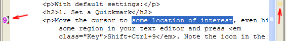

With default settings:
Move the cursor to some location of interest, even highlight/select some region in your text editor and press Shift+Ctrl+9. Note the icon in the bar left to the editor: it will show a decorated 9. Note also the (yellow) mark in the overview bar to the right of your editor and the message in the statusline ... which disappears after some short time.

Move the cursor elsewhere, or close the editor/document with the Quickmark 9, even close all Editors. Now press Alt+9. Instantly you'll be taken to the same location you have set the Quickmark on, opening the right editor when required. Your previous selection is remebered and highlighted. Note the message in the statusline.
Jump to a Quickmark as described above, then try to add the same mark number again Shift+Ctrl+9; this time the Quickmark will be deleted. Trying to set a Quickmark at the same location twice is interpreted as a delete request. The decorations left/right to the editor disappear and the delete is messaged in the statusline.
Having a Quickmark 9 set somewhere move the cursor/selection elsewhere, be it in the same or any other document, even in a totally unrelated project. Then try to add the same mark number again Shift+Ctrl+9. The old mark is deleted and a new mark with the same number is set at the current location (the Quickmark is moved).
Most probably you will not see the removal of the old mark. The old mark might be far away, even in some other document. Note the statusline message, it indicates what happened. There is no undo (yet) for marker moving. The old position is silently lost!
See: